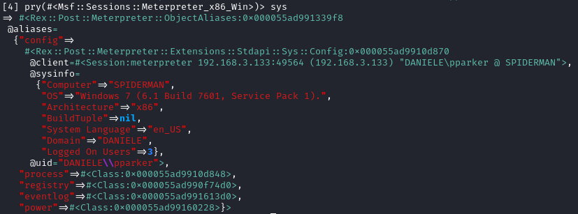

sys
/usr/share/metasploit-framework/lib/rex/post/meterpreter/extensions/stdapi/sys


Formatting on the meterpreter console:
/usr/share/metasploit-framework/lib/rex/post/meterpreter/ui/console/command_dispatcher/stdapi/sys.rb
Config class
/usr/share/metasploit-framework/lib/rex/post/meterpreter/extensions/stdapi/sys/config.rb
methods:
◇ getuid

sysconfig.getuid

◇ sysinfo

sys.config.sysinfo

◇ getprivs
sys.config.getprivs

array of enabled privileges
Process Class
/usr/share/metasploit-framework/lib/rex/post/meterpreter/extensions/stdapi/sys/process.rb
source: |-
/usr/share/metasploit-framework/lib/rex/post/meterpreter/extensions/stdapi/sys/config.rb
methods:
◇ getpid

sys.process.getpid

◇ processes

sys.process.get_processes
sys.process.processes #alias

Registry class
This class provides access to the Windows registry on the remote machine.
/usr/share/metasploit-framework/lib/rex/post/meterpreter/extensions/stdapi/sys/registry.rb

methods:
◇ enum_key

sys.registry.enum_key(HKEY_USERS)